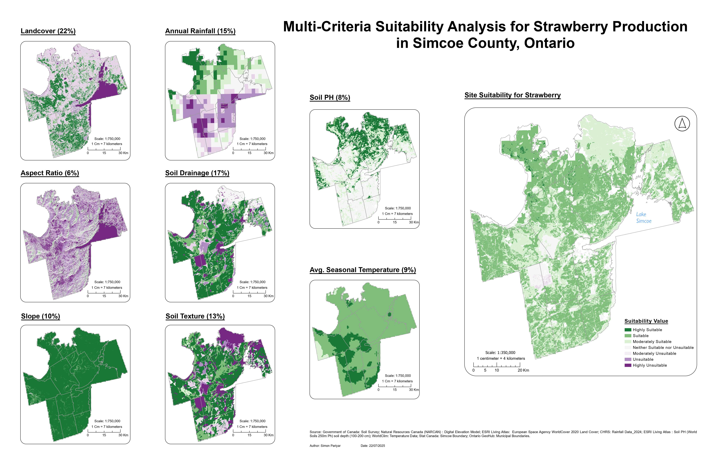
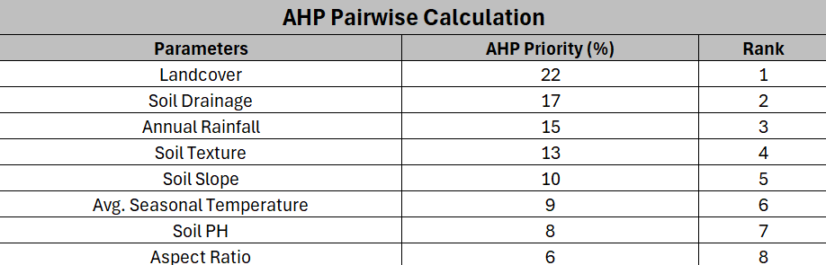
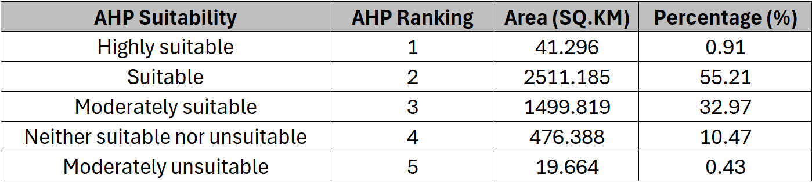
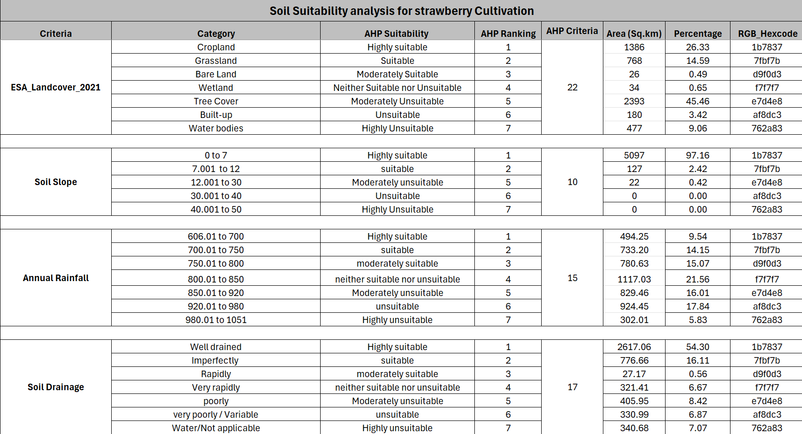
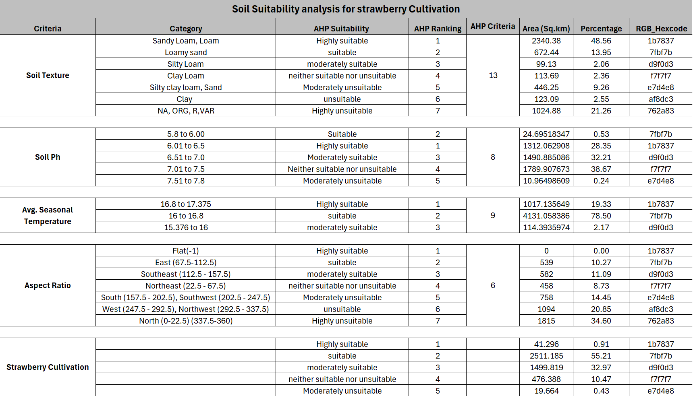

This map highlights the areas most suitable for strawberry production in Simcor County. AHP pairwise comparison was conducted to evaluate and prioritize key factors influencing suitability, including soil texture, soil drainage, aspect, slope, average summer temperature, soil pH, landcover, and annual rainfall data accessed from different open source. These parameters were integrated using the Weighted Overlay tool in ArcGIS Pro, allowing for a comprehensive spatial analysis. As a result, the most favorable zones for strawberry cultivation were identified.
In order to assess the suitability for strawberry production, each parameter was classified on a scale from 1 to 7, where 1 represent the highly suitable and 7 represents the highly unsuitable area. The analysis was based on eight key environmental and physical parameters: soil texture, soil drainage, aspect, slope, average summer temperature, soil pH, land cover, and annual rainfall. Each parameter was individually reclassified based on its influence on strawberry growth.

A weight was then assigned to each parameter through the Analytical Hiererchy Process (AHP) to reflect its relative importance.The Weighted Overlay tool in ArcGIS Pro was used to combine all reclassified layers into a single composite suitability map. Finally, the resulting layer was reclassified into suitability zones to identify areas most appropriate for strawberry cultivation in Simcoe County.


The analysis identified that most areas in Simcoe County have favorable conditions for strawberry cultivation. About 0.9% (41.3 km²) of the land is highly suitable, while 55.2% (2,511.2 km²) is suitable and 33.0% (1,499.8 km²) is moderately suitable. Only a small portion, around 10.5%, is unsuitable or moderately unsuitable due to poor drainage, steep slopes, or unfavorable soil conditions. Overall, the study shows that Simcoe County has strong potential for expanding strawberry production, especially in the central and northern regions with good soil and drainage conditions.

